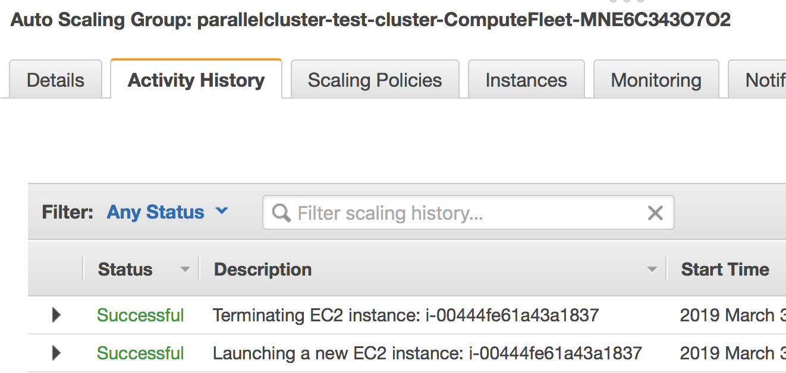

A scientist's guide to cloud-HPC: example with AWS ParallelCluster, Slurm, Spack, and WRF
Contents
1 Motivation and principle of this guide
Cloud-HPC is growing rapidly [1], and the growth can only be faster with AWS's recent HPC-oriented services such as EC2 c5n, FSx for Lustre, and the soon-coming EFA. However, orchestrating a cloud-HPC cluster is by no means easy, especially considering that many HPC users are from science and engineering and are not trained with IT and system administration skills. There are very few documentations for this niche field, and users could face a pretty steep learning curve. To make people's lives a bit easier (and to provide a reference for the future me), I wrote this guide to show an easy-to-follow workflow of building a fully-fledged HPC cluster environment on AWS.
My basic principles are:
- Minimize the learning curve for non-IT/non-CS people. That being said, it can still take a while for new users to learn. But you should be able to use a cloud-HPC cluster with confidence after going through this guide.
- Focus on common, general, transferrable cases. I would avoid diving into a particular scientific field, or into a niche AWS utility with no counterparts on other cloud platforms -- those can be left to other posts, but do not belong to this guide.
This guide will go through:
- Spin-up an HPC cluster with AWS ParallelCluster, AWS's official HPC framework. If you prefer a multi-platform, general-purpose tool, consider ElastiCluster, but expect a steeper learning curve and less up-to-date AWS features. If you feel that all those frameworks are too black-boxy, try building a cluster manually [2] to understand how multiple nodes are glued together. The manual approach becomes quite inconvenient at production, so you will be much better off by using a higher-level framework.
- Basic cluster operations with Slurm, an open-source, modern job scheduler deployed on many HPC centers. ParallelCluster can also use AWS Batch instead of Slurm as the scheduler; it is a very interesting feature but I will not cover it here.
- Common cluster management tricks such as changing the node number and type on the fly.
- Install HPC software stack by Spack, an open-source, modern HPC package manager used in production at many HPC centers. This part should also work for other cloud platforms, on your own workstation, or in a container.
- Build real-world HPC code. As an example I will use the Weather Research and Forecasting (WRF) Model, an open-source, well-known atmospheric model. This is just to demonstrate that getting real applications running is relatively straightforward. Adapt it for your own use cases.
2 Prerequisites
This guide only assumes:
- Basic EC2 knowledge. Knowing how to use a single instance is good enough. Thanks to the wide-spreading ML/DL hype, this seems to become a common skill for science & engineering students -- most people in my department (non-CS) know how to use AWS DL AMI, Google DL VM or Azure DS VM. If not, the easiest way to learn it is probably through online DL courses [3].
- Basic S3 knowledge. Knowing how to aws s3 cp is good enough. If not, check out AWS's 10-min tutorial.
- Entry-level HPC user knowledge. Knowing how to submit MPI jobs is good enough. If not, checkout HPC carpentry [4].
It does NOT require the knowledge of:
- CloudFormation. It is the underlying framework for AWS ParallelCluster (and many third-party tools), but can take quite a while to learn.
- Cloud networking. You can use the cluster smoothly even without knowing what TCP is.
- How to build complicated libraries from source -- this will be handled by Spack.
3 Cluster deployment
This section uses ParallelCluster version 2.2.1 as of Mar 2019. Future versions shouldn't be vastly different.
First, check out ParallelCluster's official doc: https://aws-parallelcluster.readthedocs.io. It guides you through some toy examples, but not production-ready applications. Play with the toy examples a bit and get familiar with those basic commands:
- pcluster configure
- pcluster create
- pcluster list
- pcluster ssh
- pcluster delete
3.1 A minimum config file for production HPC
The cluster infrastructure is fully specified by ~/.parallelcluster/config. A minimum, recommended config file would look like:
[aws] aws_region_name = xxx [cluster your-cluster-section-name] key_name = xxx base_os = centos7 master_instance_type = c5n.large compute_instance_type = c5n.18xlarge cluster_type = spot initial_queue_size = 2 scheduler = slurm placement_group = DYNAMIC vpc_settings = your-vpc-section-name ebs_settings = your-ebs-section-name [vpc your-vpc-section-name] vpc_id = vpc-xxxxxxxx master_subnet_id = subnet-xxxxxxxx [ebs your-ebs-section-name] shared_dir = shared volume_type = st1 volume_size = 500 [global] cluster_template = your-cluster-section-name update_check = true sanity_check = true
A brief comment on what are set:
-
aws_region_nameshould be set at initialpcluster configure. I useus-east-1. -
key_nameis your EC2 key-pair name, forsshto master instance. -
base_os = centos7should be a good choice for HPC, because CentOS is particularly tolerant of legacy HPC code. Some code that doesn't build on Ubuntu can actually pass on CentOS. Without build problems, any OS choice should be fine -- you shouldn't observe visible performance difference across different OS, as long as the compilers are the same. - Use the biggest compute node
c5n.18xlargeto minimize communication. Master node is less critical for performance and is totally up to you. -
cluster_type = spotwill save you a lot of money by using spot instances for compute nodes. -
initial_queue_size = 2spins up two compute nodes at initial launch. This is default but worth emphasizing. Sometimes there is not enough compute capacity in a zone, and withinitial_queue_size = 0you won't be able to detect that at cluster creation. - Set
scheduler = slurmas we are going to use it in later sections. -
placement_group = DYNAMICcreates a placement group [5] on the fly so you don't need to create one yourself. Simply put, a cluster placement group improves inter-node connection. -
vpc_idandmaster_subnet_idshould be set at initialpcluster configure. Because a subnet id is tied to an avail zone [6], the subnet option implicitly specifies which avail zone your cluster will be launched into. You may want to change it because the spot pricing and capacity vary across avail zones. -
volume_type = st1specifies throughput-optimized HDD [7] as shared disk. The minimum size is 500 GB. It will be mounted to a directory/shared(which is also default) and will be visible to all nodes. -
cluster_templateallows you to put multiple cluster configurations in a single config file and easily switch between them.
Credential information like aws_access_key_id can be omitted, as it will default to awscli credentials stored in ~/.aws/credentials.
The full list of parameters are available in the official docs [8]. Other useful parameters you may consider changing are:
- Set
placement = clusterto also put your master node in the placement group. - Specify
s3_read_write_resourceso you can access that S3 bucket without configuring AWS credentials on the cluster. Useful for archiving data. - Increase
master_root_volume_sizeandcompute_root_volume_size, if your code involves heavy local disk I/O. -
max_queue_sizeandmaintain_initial_sizeare less critical as they can be easily changed later.
I have omitted the FSx section, which is left to the next post.
One last thing: Many HPC code runs faster with hyperthreading disabled [9]. To achieve this at launch, you can write a custom script and execute it via the post_install option in pcluster's config file. This is a bit involved though. Hopefully there can be a simple option in future versions of pcluster.
With the config file in place, run pcluster create your-cluster-name to launch a cluster.
3.2 What are actually deployed
(This part is not required for first-time users. It just helps understanding.)
AWS ParallelCluster (or other third-party cluster tools) glues many AWS services together. While not required, a bit more understanding of the underlying components would be helpful -- especially when debugging and customizing things.
The official doc provides a conceptual overview [10]. Here I give a more hands-on introduction by actually walking through the AWS console. When a cluster is running, you will see the following components in the console:
- CloudFormation Stack. Displayed under "Services" - "CloudFormation". This is the top-level framework that controls the rest. You shouldn't need to touch it, but its output can be useful for debugging.
The rest of services are all displayed under the main EC2 console.
-
EC2 Placement Group. It is created automatically because of the line
placement_group = DYNAMICin theconfigfile.
-
EC2 Instances. Here, there are one master node and two compute nodes running, as specified by the
configfile. You can directlysshto the master node, but the compute nodes are only accessible from the master node, not from the Internet.
-
EC2 Auto Scaling Group. Your compute instances belong to an Auto Scaling group [11], which can quickly adjust the number of instances with minimum human operation. The number under the "Instances" column shows the current number of compute nodes; the "Desired" column shows the target number of nodes, and this number can be adjusted automatically by the Slurm scheduler; the "Min" column specifies the lower bound of nodes, which cannot be changed by the scheduler; the "Max" column corresponds to
max_queue_sizein the config file. You can manually change the number of compute nodes here (more on this later).
The launch event is recored in the "Activity History"; if a node fails to launch, the error message will go here.
- EC2 Launch Template. It specifies the EC2 instance configuration (like instance type and AMI) for the above Auto Scaling Group.
-
EC2 Spot Request. With
cluster_type = spot, each compute node is associated with a spot request.
-
EBS Volume. You will see 3 kinds of volumes. A standalone volume specified in the
ebssection, a volume for master node, and a few volumes for compute nodes.
- Auxiliary Services. They are not directly related to the computation, but help gluing the major computing services together. For example, the cluster uses DynamoDB (Amazon's noSQL database) for storing some metadata. The cluster also relies on Amazon SNS and SQS for interaction between the Slurm scheduler and the AutoScaling group. We will see this in action later.
Imagine the workload involved if you launch all the above resources by hand and glue them together. Fortunately, as a user, there is no need to implement those from scratch. But it is good to know a bit about the underlying components.
In most cases, you should not manually modify those individual resources. For example, if you terminate a compute instance, a new one will be automatically launched to match the current autoscaling requirement. Let the high-level pcluster command handle the cluster operation. Some exceptions will be mentioned in the "tricks" section later.
4 ParallelCluster basic operation
4.1 Using Slurm
After login to the master node with pcluster ssh, you will use Slurm to interact with compute nodes. Here I summarize commonly-used commands. For general reference, see Slurm's documentation: https://www.schedmd.com/.
Slurm is pre-installed at /opt/slurm/ :
$ which sinfo /opt/slurm/bin/sinfo
Check compute node status:
$ sinfo PARTITION AVAIL TIMELIMIT NODES STATE NODELIST compute* up infinite 2 idle ip-172-31-3-187,ip-172-31-7-245
The 172-31-xxx-xxx is the Private IP [12] of the compute instances. The address range falls in your AWS VPC subnet. On EC2, hostname prints the private IP:
$ hostname # private ip of master node ip-172-31-7-214
To execute commands on compute nodes, use srun:
$ srun -N 2 -n 2 hostname # private ip of compute nodes ip-172-31-3-187 ip-172-31-7-245
The printed IP should match the output of sinfo.
You can go to a compute node with the standard Slurm command:
$ srun -N 1 -n 72 --pty bash # Slurm thinks a c5n.18xlarge node has 72 cores due to hyperthreading $ sinfo # one node is fully allocated PARTITION AVAIL TIMELIMIT NODES STATE NODELIST compute* up infinite 1 alloc ip-172-31-3-187 compute* up infinite 1 idle ip-172-31-7-245
Or simply via ssh:
$ ssh ip-172-31-3-187 $ sinfo # still idle PARTITION AVAIL TIMELIMIT NODES STATE NODELIST compute* up infinite 2 idle ip-172-31-3-187,ip-172-31-7-245
In this case, the scheduler is not aware of such activity.
The $HOME directory is exported to all nodes via NFS by default, so you can still see the same files from compute nodes. However, system directories like /usr are specific to each node. Software libraries should generally be installed to a shared disk, otherwise they will not be accessible from compute nodes.
4.2 Check system & hardware
A natural thing is to check CPU info with lscpu and file system structure with df -h. Do this on both master and compute nodes to see the differences.
A serious HPC user should also check the network interface:
$ ifconfig # display network interface names and details ens5: ... lo: ...
Here, the ens5 section is the network interface for inter-node commnunication. Its driver should be ena:
$ ethtool -i ens5 driver: ena version: 1.5.0K
This means that "Enhanced Networking" is enabled [13]. This should be the default on most modern AMIs, so you shouldn't need to change anything.
4.3 Cluster management tricks
AWS ParallelCluster is able to auto-scale [14], meaning that new compute nodes will be launched automatically when there are pending jobs in Slurm's queue, and idle nodes will be terminated automatically.
While this generally works fine, such automatic update takes a while and feels a bit black-boxy. A more straightforward & transparent way is to modify the autoscaling group directly in the console. Right-click on your AutoScaling Group, and select "Edit":
- Modifying "Desired Capacity" will immediately cause the cluster to adjust to that size. Either to request more nodes or to kill redundant nodes.
- Increase "Min" to match "Desired Capacity" if you want the compute nodes to keep running even if they are idle. Or keep "Min" as zero, so idle nodes will be killed after some time period (a few minutes, roughly match the "Default Cooldown" section in the Auto Scaling Group).
- "Max" must be at least the same as "Desired Capacity". This is the hard-limit that the scheduler cannot violate.
After compute nodes are launched or killed, Slurm should be aware of such change in ~1 minute. Check it with sinfo.
To further change the type (not just the number) of the compute nodes, you can modify the config file, and run pcluster update your-cluster-name [15].
5 Install HPC software stack with Spack
While you can get pre-built MPI binaries with sudo yum install -y openmpi-devel on CentOS or sudo apt install -y libopenmpi-dev on Ubuntu, they are generally not the specific version you want. On the other hand, building custom versions of libraries from source is too laborious and error-prone [16]. Spack achieves a great balance between the ease-of-use and customizability. It has an excellent documentation which I strongly recommend reading: https://spack.readthedocs.io/.
Here I provide the minimum required steps to build a production-ready HPC environment.
Getting Spack is super easy:
cd /shared # install to shared disk git clone https://github.com/spack/spack.git echo 'export PATH=/shared/spack/bin:$PATH' >> ~/.bashrc # to discover spack executable source ~/.bashrc
At the time of writing, I am using:
$ spack --version 0.12.1
The first thing is to check what compilers are available. Most OS should already have a GNU compiler installed, and Spack can discover it:
$ spack compilers ==> Available compilers -- gcc centos7-x86_64 ------------------------------------------- gcc@4.8.5
Note
If not installed, just sudo yum install gcc gcc-gfortran gcc-c++ on CentOS or sudo apt install gcc gfortran g++ on Ubuntu.
You might want to get a newer version of the compiler:
$ spack install gcc@8.2.0 # can take 30 min! $ spack compiler add $(spack location -i gcc@8.2.0) $ spack compilers ==> Available compilers -- gcc centos7-x86_64 ------------------------------------------- gcc@8.2.0 gcc@4.8.5
Note
Spack builds software from source, which can take a while. To persist the build you can run it inside tmux sessions. If not installed, simply run sudo yum install tmux or sudo apt install tmux.
Note
Always use spack spec to check versions and dependencies before running spack install!
5.1 MPI libraries (OpenMPI with Slurm support)
Spack can install many MPI implementations, for example:
$ spack info mpich $ spack info mvapich2 $ spack info openmpi
In this example I will use OpenMPI. It has a super-informative documentation at https://www.open-mpi.org/faq/
5.1.1 Installing OpenMPI
In principle, the installation is as simple as:
$ spack install openmpi # not what we will use here
Or a specific version:
$ spack install openmpi@3.1.3 # not what we will use here
However, we want OpenMPI to be built with Slurm [17], so the launch of MPI processes can be handled by Slurm's scheduler.
Because Slurm is pre-installed, you will add it as an external package to Spack [18].
$ which sinfo # comes with AWS ParallelCluster /opt/slurm/bin/sinfo $ sinfo -V slurm 16.05.3
Add the following section to ~/.spack/packages.yaml:
packages: slurm: paths: slurm@16.05.3: /opt/slurm/ buildable: False
This step is extremely important. Without modifying packages.yaml, Spack will install Slurm for you, but the newly-installed Slurm is not configured with the AWS cluster.
Then install OpenMPI wih:
$ spack install openmpi+pmi schedulers=slurm # use this
After installation, locate its directory:
$ spack find -p openmpi
Modify $PATH to discover executables like mpicc:
$ export PATH=$(spack location -i openmpi)/bin:$PATH
Note
Spack removes the mpirun executable by default if built with Slurm, to encourage the use of srun for better process management [19]. I need mpirun for illustration purpose in this guide, so recover it by ln -s orterun mpirun in the directory $(spack location -i openmpi)/bin/.
A serious HPC user should also check the available Byte Transfer Layer (BTL) in OpenMPI:
$ ompi_info --param btl all MCA btl: self (MCA v2.1.0, API v3.0.0, Component v3.1.3) MCA btl: tcp (MCA v2.1.0, API v3.0.0, Component v3.1.3) MCA btl: vader (MCA v2.1.0, API v3.0.0, Component v3.1.3) ...
5.1.2 Using OpenMPI with Slurm
Let's use this boring but useful "MPI hello world" example:
#include <mpi.h> #include <stdio.h> #include <unistd.h> int main(int argc, char *argv[]) { int rank, size; char hostname[32]; MPI_Init(&argc, &argv); MPI_Comm_rank(MPI_COMM_WORLD, &rank); MPI_Comm_size(MPI_COMM_WORLD, &size); gethostname(hostname, 31); printf("I am %d of %d, on host %s\n", rank, size, hostname); MPI_Finalize(); return 0; }
Put it into a hello_mpi.c file and compile:
$ mpicc -o hello_mpi.x hello_mpi.c $ mpirun -np 1 ./hello_mpi.x # runs on master node I am 0 of 1, on host ip-172-31-7-214
To run it on compute nodes, the classic MPI way is to specify the node list via --host or --hostfile (for OpenMPI; other MPI implementations have similar options):
$ mpirun -np 2 --host ip-172-31-5-150,ip-172-31-14-243 ./hello_mpi.x I am 0 of 2, on host ip-172-31-5-150 I am 1 of 2, on host ip-172-31-14-243
Following --host are compute node IPs shown by sinfo.
A more sane approach is to launch it via srun, which takes care of the placement of MPI processes:
$ srun -N 2 --ntasks-per-node 2 ./hello_mpi.x I am 1 of 4, on host ip-172-31-5-150 I am 0 of 4, on host ip-172-31-5-150 I am 3 of 4, on host ip-172-31-14-243 I am 2 of 4, on host ip-172-31-14-243
5.2 HDF5 and NetCDF libraries
HDF5 and NetCDF are very common I/O libraries for HPC, widely used in Earth science and many other fields.
In principle, installing HDF5 is simply:
$ spack install hdf5 # not what we will use here
Many HPC code (like WRF) needs the full HDF5 suite (use spack info to check all the variants):
$ spack install hdf5+fortran+hl # not what we will use here
Further specify MPI dependencies:
$ spack install hdf5+fortran+hl ^openmpi+pmi schedulers=slurm # use this
Similarly, for NetCDF C & Fortran, in principle it is simply:
$ spack install netcdf-fortran # not what we will use here
To specify the full dependency, we end up having:
$ spack install netcdf-fortran ^hdf5+fortran+hl ^openmpi+pmi schedulers=slurm # use this
5.3 Further reading on advanced package management
For HPC development you generally need to test many combinations of libraries. To better organize multiple environments, check out:
-
spack envandspack.yamlat: https://spack.readthedocs.io/en/latest/tutorial_environments.html. For Python users, this is likevirtualenvorconda env. - Integration with
moduleat: https://spack.readthedocs.io/en/latest/tutorial_modules.html. This should be a familiar utility for existing HPC users.
5.4 Note on reusing software installation
For a single EC2 instance, it is easy to save the environment - create an AMI, or just build a Docker image. Things get quite cumbersome with a multi-node cluster environment. From official docs, "Building a custom AMI is not the recommended approach for customizing AWS ParallelCluster." [23].
Fortunately, Spack installs everything to a single, non-root directory (similar to Anaconda), so you can simply tar-ball the entire directory and then upload to S3 or other persistent storage:
spack clean --all # clean all kinds of caches tar zcvf spack.tar.gz spack # compression aws s3 mb [your-bucket-name] # create a new bucket. might need to configure AWS credentials for permission aws s3 cp spack.tar.gz s3://[your-bucket-name]/ # upload to S3 bucket
Also remember to save (and later recover) your custom settings in ~/.spack/packages.yaml, ~/.spack/linux/compilers.yaml and .bashrc.
Then you can safely delete the cluster. For the next time, simply pull the tar-ball from S3 and decompress it. The environment would look exactly the same as the last time. You should use the same base_os to minimize binary-compatibility errors.
A minor issue is regarding dynamic linking. When re-creating the cluster environment, make sure that the spack/ directory is located at the same location where the package was installed last time. For example, if it was at /shared/spack/, then use the new location should also be exactly /shared/spack/.
The underlying reason is that Spack uses RPATH for library dependencies, to avoid messing around $LD_LIBRARY_PATH [24]. Simply put, it hard-codes the dependencies into the binary. You can check the hard-coded paths by, for example:
readelf -d $(spack location -i openmpi)/bin/mpicc | grep RPATH
If the new shared EBS volume is mounted to a new location like /shared_new, a quick-and-dirty fix would be:
sudo ln -s /shared_new /shared/
5.5 Special note on Intel compilers
Although I'd like to stick with open-source software, sometimes there is a solid reason to use proprietary ones like the Intel compiler -- WRF being a well-known example that runs much faster with ifort than with gfortran [32]. Note that Intel is generous enough to provide student licenses for free.
Although Spack can install Intel compilers by itself, a more robust approach is to install it externally and add as an external package [25]. Intel has a dedicated guide for installation on EC2 [26] so I won't repeat the steps here.
Once you have a working icc/ifort in $PATH, just running spack compiler add should discover the new compilers [27].
Then, you should also add something like
extra_rpaths: ['/shared/intel/lib/intel64']
to ~/.spack/linux/compilers.yaml under the Intel compiler section. Otherwise you will see interesting linking errors when later building libraries with the Intel compiler [28].
After those are all set, simple add %intel to all spack install commands to build new libraries with Intel.
6 Build real applications -- example with WRF
With common libraries like MPI, HDF5, and NetCDF installed, compiling real applications shouldn't be difficult. Here I show how to build WRF, a household name in the Atmospheric Science community. We will hit a few small issues (as likely for other HPC code), but they are all easy to fix by just Googling the error messages.
Get the recently released WRF v4:
wget https://github.com/wrf-model/WRF/archive/v4.0.3.tar.gz tar zxvf v4.0.3.tar.gz
Here I only provide the minimum steps to build the WRF model, without diving into the actual model usage. If you plan to use WRF for either research or operation, please carefully study:
- The official user guide: http://www2.mmm.ucar.edu/wrf/users/
- A user-friendly tutorial: http://www2.mmm.ucar.edu/wrf/OnLineTutorial/index.php
6.1 Environment setup
Add those to your ~/.bashrc (adapted from the WRF compile tutorial):
# Let WRF discover necessary executables export PATH=$(spack location -i gcc)/bin:$PATH # only needed if you installed a new gcc export PATH=$(spack location -i openmpi)/bin:$PATH export PATH=$(spack location -i netcdf)/bin:$PATH export PATH=$(spack location -i netcdf-fortran)/bin:$PATH # Environment variables required by WRF export HDF5=$(spack location -i hdf5) export NETCDF=$(spack location -i netcdf-fortran) # run-time linking export LD_LIBRARY_PATH=$HDF5/lib:$NETCDF/lib:$LD_LIBRARY_PATH # this prevents segmentation fault when running the model ulimit -s unlimited # WRF-specific settings export WRF_EM_CORE=1 export WRFIO_NCD_NO_LARGE_FILE_SUPPORT=0
WRF also requires NetCDF-C and NetCDF-Fortran to be located in the same directory [29]. A quick-and-dirty fix is to copy NetCDF-C libraries and headers to NetCDF-Fortran's directory:
NETCDF_C=$(spack location -i netcdf) ln -sf $NETCDF_C/include/* $NETCDF/include/ ln -sf $NETCDF_C/lib/* $NETCDF/lib/
6.2 Compile WRF
$ cd WRF-4.0.3 $ ./configure
- For the first question, select 34, which uses GNU compilers and pure MPI ("dmpar" -- Distributed Memory PARallelization).
- For the second question, select 1, whichs uses basic nesting.
You should get this successful message:
(omitting many lines...)
------------------------------------------------------------------------
Settings listed above are written to configure.wrf.
If you wish to change settings, please edit that file.
If you wish to change the default options, edit the file:
arch/configure.defaults
Testing for NetCDF, C and Fortran compiler
This installation of NetCDF is 64-bit
C compiler is 64-bit
Fortran compiler is 64-bit
It will build in 64-bit
*****************************************************************************
This build of WRF will use NETCDF4 with HDF5 compression
*****************************************************************************
To fix a minor issue regarding WRF + GNU + OpenMPI [30], modify the generated configure.wrf so that:
DM_CC = mpicc -DMPI2_SUPPORT
Then build the WRF executable for the commonly used em_real case:
./compile em_real 2>&1 | tee wrf_compile.log
You might also use a bigger master node (or go to a compute node) and add something like -j 8 for parallel build.
It should finally succeed:
(omitting many lines...) ========================================================================== build started: Mon Mar 4 01:32:52 UTC 2019 build completed: Mon Mar 4 01:41:36 UTC 2019 ---> Executables successfully built <--- -rwxrwxr-x 1 centos centos 41979152 Mar 4 01:41 main/ndown.exe -rwxrwxr-x 1 centos centos 41852072 Mar 4 01:41 main/real.exe -rwxrwxr-x 1 centos centos 41381488 Mar 4 01:41 main/tc.exe -rwxrwxr-x 1 centos centos 45549368 Mar 4 01:41 main/wrf.exe ==========================================================================
Now you have the WRF executables. This is a good first step, considering that so many people are stuck at simply getting the code compiled [31]. Actually using WRF for research or operational purposes requires a lot more steps and domain expertise, which is way beyond this guide. You will also need to build the WRF Preprocessing System (WPS), obtain the geographical data and the boundary/initial conditions for your specific problem, choose the proper model parameters and numerical schemes, and interpret the model output in a scientific way.
In the future, you might be able to install WRF with one-click by Spack [33]. For WRF specifically, you might also be interested in EasyBuild for one-click install. A fun fact is that Spack can also install EasyBuild (see spack info easybuild), despite their similar purposes.
That's the end of this guide, which I believe has covered the common patterns for cloud-HPC.
7 References
| [1] | Cloud Computing in HPC Surges: https://www.top500.org/news/cloud-computing-in-hpc-surges/ |
| [2] | See Quick MPI Cluster Setup on Amazon EC2: https://glennklockwood.blogspot.com/2013/04/quick-mpi-cluster-setup-on-amazon-ec2.html. It was written in 2013 but all steps still apply. AWS console looks quite different now, but the concepts are not changed. |
| [3] | For example, fast.ai's tutorial on AWS EC2 https://course.fast.ai/start_aws.html, or Amazon's DL book https://d2l.ai/chapter_appendix/aws.html. |
| [4] | See Introduction to High-Performance Computing at: https://hpc-carpentry.github.io/hpc-intro/. It only covers very simple cluster usage, not parallel programming. |
| [5] | See Placement Groups in AWS docs: https://docs.aws.amazon.com/AWSEC2/latest/UserGuide/placement-groups.html#placement-groups-cluster |
| [6] | You might want to review "Regions and Availability Zones" in AWS docs: https://docs.aws.amazon.com/AWSEC2/latest/UserGuide/using-regions-availability-zones.html |
| [7] | See Amazon EBS Volume Types: https://docs.aws.amazon.com/AWSEC2/latest/UserGuide/EBSVolumeTypes.html. HDD is cheap and good enough. If I/O is a real problem then you should use FSx for Lustre. |
| [8] | The Configuration section in the docs: https://aws-parallelcluster.readthedocs.io/en/latest/configuration.html |
| [9] | See Disabling Intel Hyper-Threading Technology on Amazon Linux at: https://aws.amazon.com/blogs/compute/disabling-intel-hyper-threading-technology-on-amazon-linux/ |
| [10] | AWS Services used in AWS ParallelCluster: https://aws-parallelcluster.readthedocs.io/en/latest/aws_services.html. |
| [11] | See AutoScaling groups in AWS docs https://docs.aws.amazon.com/autoscaling/ec2/userguide/AutoScalingGroup.html |
| [12] | You might want to review the IP Addressing section in AWS docs: https://docs.aws.amazon.com/vpc/latest/userguide/vpc-ip-addressing.html |
| [13] | See Enhanced Networking on AWS docs. https://docs.aws.amazon.com/AWSEC2/latest/UserGuide/enhanced-networking.html. For a more techinical discussion, see SR-IOV and Amazon's C3 Instances: https://glennklockwood.blogspot.com/2013/12/high-performance-virtualization-sr-iov.html |
| [14] | See AWS ParallelCluster Auto Scaling: https://aws-parallelcluster.readthedocs.io/en/latest/autoscaling.html |
| [15] | See my comment at https://github.com/aws/aws-parallelcluster/issues/307#issuecomment-462215214 |
| [16] | For example, try building MPI-enabled NetCDF once, and you will never want to do it again: https://www.unidata.ucar.edu/software/netcdf/docs/getting_and_building_netcdf.html |
| [17] | See Running jobs under Slurm in OpenMPI docs: https://www.open-mpi.org/faq/?category=slurm |
| [18] | https://github.com/spack/spack/pull/8427#issuecomment-395770378 |
| [19] | See the discussion in my PR: https://github.com/spack/spack/pull/10340 |
| [20] | See "3. How do I specify use of sm for MPI messages?" in OpenMPI docs: https://www.open-mpi.org/faq/?category=sm#sm-btl |
| [21] | See Tuning the run-time characteristics of MPI TCP communications in OpenMPI docs: https://www.open-mpi.org/faq/?category=tcp |
| [22] | See "What is the vader BTL?" in OpenMPI docs: https://www.open-mpi.org/faq/?category=sm#what-is-vader |
| [23] | See Building a custom AWS ParallelCluster AMI at: https://aws-parallelcluster.readthedocs.io/en/latest/tutorials/02_ami_customization.html |
| [24] | A somewhat relevant discussion is that the "Transitive Dependencies" section of Spack docs: https://spack.readthedocs.io/en/latest/workflows.html#transitive-dependencies |
| [25] | See Integration of Intel tools installed external to Spack: https://spack.readthedocs.io/en/latest/build_systems/intelpackage.html#integration-of-intel-tools-installed-external-to-spack |
| [26] | See Install Intel® Parallel Studio XE on Amazon Web Services (AWS) https://software.intel.com/en-us/articles/install-intel-parallel-studio-xe-on-amazon-web-services-aws |
| [27] | See Integrating external compilers in Spack docs: https://spack.readthedocs.io/en/latest/build_systems/intelpackage.html?highlight=intel#integrating-external-compilers |
| [28] | See this comment at: https://github.com/spack/spack/issues/8315#issuecomment-393160339 |
| [29] | Related discussions are at https://github.com/spack/spack/issues/8816 and https://github.com/wrf-model/WRF/issues/794 |
| [30] | http://forum.wrfforum.com/viewtopic.php?f=5&t=3660 |
| [31] | Just Google "WRF compile error" |
| [32] | Here's a modern WRF benchmark conducted in 2018: https://akirakyle.com/WRF_benchmarks/results.html |
| [33] | Until this PR gets merged: https://github.com/spack/spack/pull/9851 |
Comments
Comments powered by Disqus